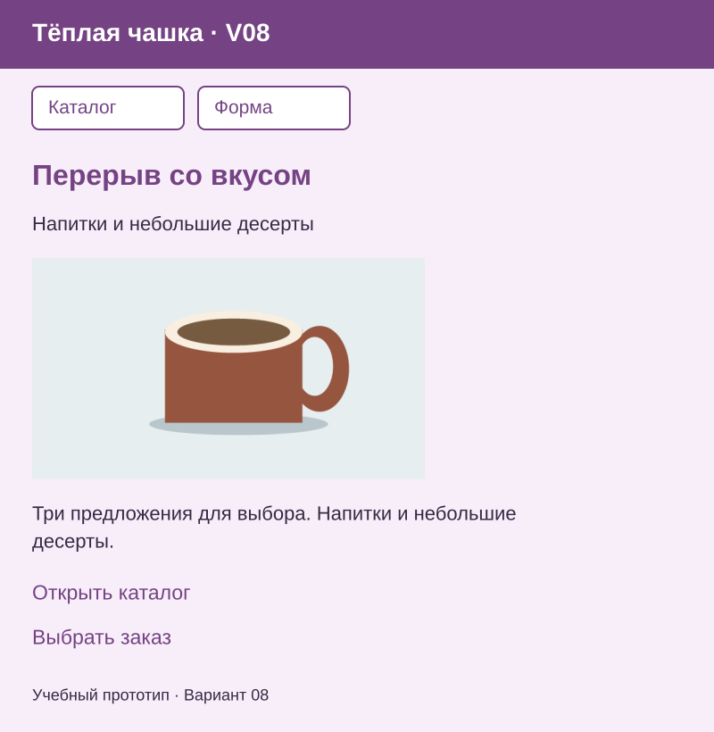
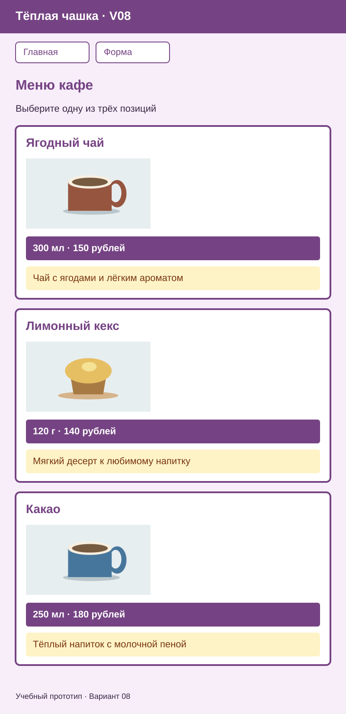
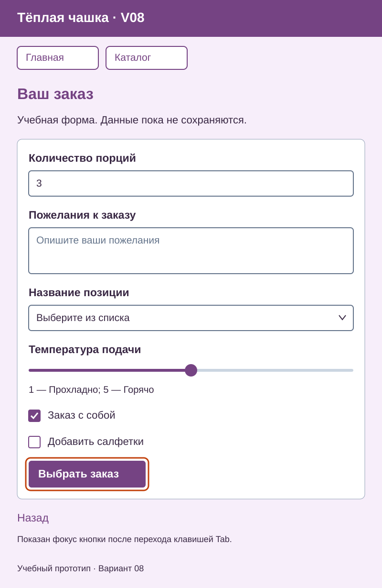
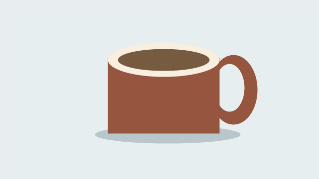
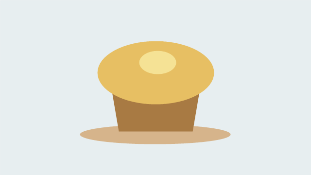
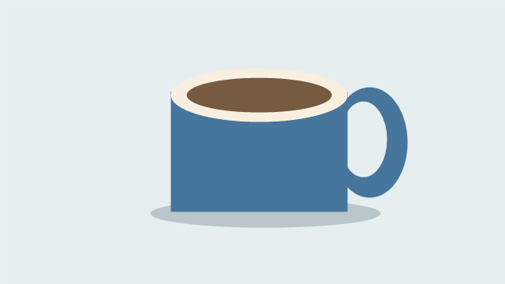

Вариант 08 — Тёплая чашка
Ваше веб-приложение — «Тёплая чашка · V08». Сохраните номер 08, свои тексты, изображения и начальные значения. Фамилия в приложении не требуется. Продолжайте прежнюю папку Variant08-web.
Что сделать сейчас
| Пара | Действие |
|---|---|
| 15 | Добавить классы, размеры и отступы; оформить три отдельные карточки |
| 16 | Оформить три страницы, характеристики, описания и форму по образцам ниже; проверить переходы и GET |
| 17 | Прочитать объяснение и заполнить три таблицы на бумаге без компьютера |
Учебный вариант 00 хранится вместе с материалами своей пары. Для текущей практики есть полный пример 00; способ работы изучайте в статье 15 и статье 16, а результат собирайте на данных своего номера 08. Проверяйте небольшие изменения самостоятельно: сохранить файл → обновить браузер → сравнить результат. Преподавателю показывают итог; отдельные отчёты по шагам не нужны.
Как выглядит результат
Это визуальные учебные образцы, а не изображения для вставки вместо HTML. Соберите страницы из настоящих элементов. Сверяйте цвета, порядок, данные и читаемость; совпадение размеров до пикселя не требуется. Карточки и поля идут сверху вниз, картинки сохраняют пропорции.
В каждом меню только две ссылки на другие страницы: на главной — «Каталог» и «Форма»; в каталоге — «Главная» и «Форма»; в форме — «Главная» и «Каталог». Ссылки на открытую страницу нет.
Главная

Каталог

Форма

Оранжевый контур показывает фокус кнопки при работе клавишей Tab; постоянно показывать его не нужно. Вид списка, флажков и ползунка может отличаться в разных браузерах. В образце список закрыт; его три позиции перечислены в данных ниже.
Цвета и стили своего варианта
Дополните существующий общий style.css. У каждого article — класс card, у характеристики — specs, у описания — description; у формы — request-form. Числовые размеры, отступы и правила полей берите из статей 15–16. В таблице — цветовые правила именно вашего варианта.
| Что оформить | Селектор | Цвета и правила |
|---|---|---|
| Фон и основной текст | body |
Фон #F7EEFA; текст #392844 |
| Шапка | header |
Фон #754383; текст #FFFFFF; название приложения — обычным абзацем |
| Заголовки и обычные ссылки | h1, h2, a |
Цвет #754383; подчёркивание обычных ссылок сохранить |
| Меню | nav a |
Белый фон; текст и рамка #754383. При :hover — фон #754383, текст белый |
| Карточка | .card |
Белый фон; border: 4px solid #754383; border-radius: 0.5rem |
| Характеристика | .card .specs |
Фон #754383; текст белый; padding: 0.5rem; font-weight: bold |
| Описание | .card .description |
Фон #FEF3C7; текст #78350F; padding: 0.5rem |
| Форма и кнопка | .request-form, .request-form button |
Форма белая; кнопка — фон и рамка #754383, текст белый |
| Фокус с клавиатуры | a:focus-visible, input:focus-visible, select:focus-visible, textarea:focus-visible, button:focus-visible |
outline: 3px solid #C2410C; outline-offset: 3px; контур #C2410C |
Не задавайте цвета характеристик и описаний общим селектором p: иначе изменятся и остальные абзацы. Меню идёт в ряд с переносом в узком окне; основное содержание остаётся вертикальным.
Содержание главной страницы
| Элемент | Ваш текст или изображение |
|---|---|
| Название приложения | Тёплая чашка · V08 |
| Заголовок главной | Перерыв со вкусом |
| Короткое пояснение | Напитки и небольшие десерты |
| Описание | Три предложения для выбора. Напитки и небольшие десерты. |
| Основное изображение | item1.png  |
| Название перехода к каталогу | Открыть каталог |
| Название перехода к форме | Выбрать заказ |
| Подпись | Учебный прототип · Вариант 08 |
Ссылка «Открыть каталог» ведёт на catalog.html, «Выбрать заказ» — на form.html. У каждой страницы один h1 внутри main и понятный title во вкладке с названием приложения и номером.
Содержание каталога
Название — «Меню кафе». Пояснение — «Выберите одну из трёх позиций».
| № | Название | Характеристика | Описание | Файл изображения |
|---|---|---|---|---|
| 1 | Ягодный чай | 300 мл · 150 рублей | Чай с ягодами и лёгким ароматом | item1.png |
| 2 | Лимонный кекс | 120 г · 140 рублей | Мягкий десерт к любимому напитку | item2.png  |
| 3 | Какао | 250 мл · 180 рублей | Тёплый напиток с молочной пеной | item3.png  |
Используйте все три позиции в указанном порядке. Каждая — отдельный article.card: h2, изображение с содержательным alt, абзац характеристики p.specs, абзац описания p.description. Готовые PNG сохраните в Variant08-web/images под именами таблицы; для главной нужен item1.png. Рисовать заново не требуется. Разрешены собственные изображения по тем же сюжетам.
Содержание формы
Название формы — «Ваш заказ». Сохраните все шесть элементов сверху вниз строго в порядке строк, включая положение ползунка и обоих флажков.
| Порядок | Видимая подпись | Элемент | Данные и начальное состояние |
|---|---|---|---|
| 1 | Количество порций | Числовое поле | Целое количество от 1; шаг 1; начальное значение 3; поле обязательно |
| 2 | Пожелания к заказу | textarea |
Подсказка: «Опишите ваши пожелания»; заполнение необязательно |
| 3 | Название позиции | select |
Первая строка — пустой выбор; затем Ягодный чай; Лимонный кекс; Какао. Выбор обязателен |
| 4 | Температура подачи | Ползунок | От 1 до 5; начальное значение 3. Края: «Прохладно» и «Горячо» |
| 5 | Заказ с собой | Независимый флажок | Выбран в начале |
| 6 | Добавить салфетки | Независимый флажок | Не выбран в начале |
Кнопка после всех элементов — «Выбрать заказ»; за формой ссылка «Назад» на index.html. У каждого элемента видимая подпись, связанная через for и уникальный id, у отправляемых полей — name. Подсказка не заменяет подпись; флажки переключаются независимо. Локальная отправка GET показывает параметры в адресе, без сервера, хранения и обработки заявок. Используйте только вымышленные учебные данные. Устройство и проверка формы — в статье 14.
Что проверить и показать
| Действие | Что должно получиться |
|---|---|
| Пройти главная → каталог → форма; сузить окно | Все переходы работают; меню содержит только две другие страницы; три карточки, тексты и картинки помещаются |
| Сравнить каталог с образцом и таблицей | Свои три позиции в своём порядке; белые карточки с акцентной рамкой, тёмные характеристики и жёлтые описания |
Пройти форму клавишей Tab, нажать подписи флажков |
Фокус виден; поля достижимы; флажки независимы |
| Отправить форму с пустым выбором, затем с корректным количеством | Сначала отказ; затем GET с данными в адресе. Пустое число, 0 и дробь не проходят проверку |
| Открыть форму заново через меню без параметров | Количество 3; «Заказ с собой» выбран, «Добавить салфетки» не выбран; шкала 3 |
Сохраните всю папку Variant08-web. Покажите три страницы, оформление карточек, фокус и отправку GET. Если исходные страницы ещё не готовы, восстановите их по статье 13 и статье 14; первые шаги HTML и CSS остаются в статьях 10, 11 и 12.
Вернуться к выбору варианта или занятиям курса.